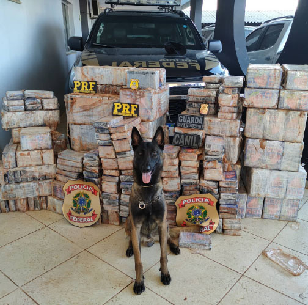
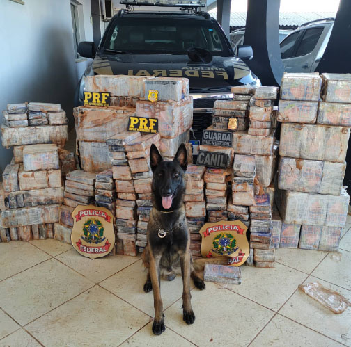

Canil
O canil da Guarda Civil Municipal vem atuando como protagonista na busca e apreensão de drogas, em parceria com a Policia Federal e Policia Rodoviária Federal.
O canil da Guarda Civil Municipal vem atuando como protagonista na busca e apreensão de drogas, em parceria com a Policia Federal e Policia Rodoviária Federal.
